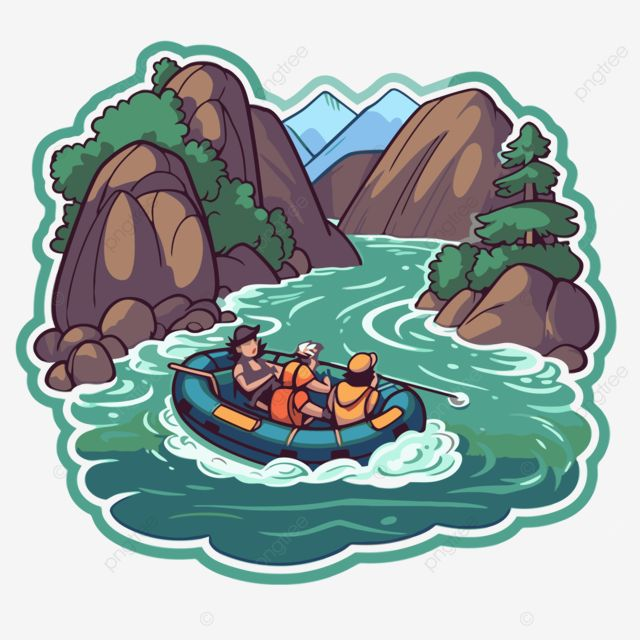

White Water Rafting
Our Mission
We are dedicated to providing safe, thrilling, and unforgettable white water rafting experiences. Our expert guides and commitment to conservation ensure you have the adventure of a lifetime while respecting the beautiful rivers we explore.
History of Our Company
Founded in 1988 by avid rafter siblings, our company began as a small, passion-driven venture on the Snake River. We quickly gained a reputation for our commitment to safety and deep local knowledge. Over three decades, we've expanded our routes and expertise, but our core value remains the same: sharing the excitement of the water with everyone.

Today, we run trips across multiple regions, constantly seeking out new challenges and breathtaking scenery. Every year is a new chapter in our commitment to adventure, conservation, and making memorable trips for our guests.